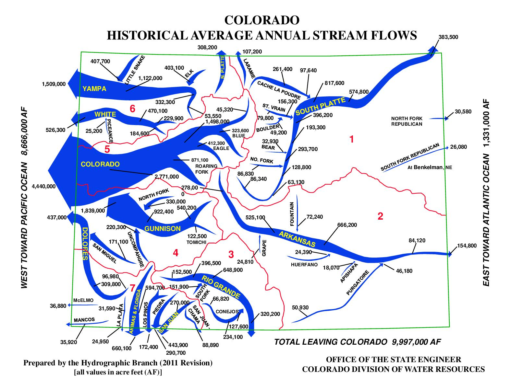

The slow creep of privatization of all of our essential resources has now reached our water. Financial services companies and hedge funds are quietly buying up municipal water rights. A water futures market was just introduced in California, betting on scarcity.
The Colorado River is a vitally important resource for drinking water, irrigation, and power for 40 million people in seven Western states.
Remniscent of Naomi Klein's Shock Doctrine, the corruption between public and private is obscene. James Eklund, Colorado's former top water official who wrote the comprehensive long term plan for the state, is now a legal counsel for one of the hedge funds buying up water rights.
The Parable of The Sower energy here is intense, Octavia Butler was so prescient as always. The head of the derivatives marketplace that created the California water futures market is betting on water scarcity for two thirds of the worlds population by 2025.
